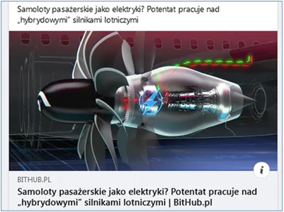
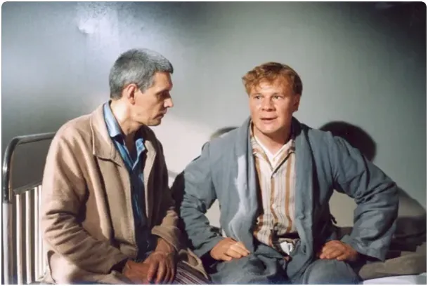

Latające lokomotywy na prąd w głowach carbo-frustratów.
"Lecz choćby przyszło tysiąc atletów i każdy zjadłby tysiąc kotletów, to..." na elektryku nie odlecą!
"Potentat" pracuje nad elektrycznymi samolotami, a prezes klubu Tęcza "dąży do prawdy" o katastrofie smoleńskiej. Koniec obu procesów leży gdzieś w nieodgadnionej przyszłości. Ładna infografika dyszy wydechowej chłodzi serca carbo-frustratów rozpalane gniewem wzbudzanym ignorancją bijącą z moich postów.
Masa startowa Boeing B737-800 zabierającego do 200 osób to może być ponad 80 ton, z czego ponad 10 ton to paliwo, a dokładnie nafta. Ze spalania 1 kg nafty otrzymujemy ponad 46 milionów dżuli energii. W czasie lotu spalane paliwo "znika" i samolot staje się coraz lżejszy, przez co jego sprawność energetyczna rośnie. Średni lot przez Europę to kilka godzin, przyjmijmy 4 h dla naszego zadania z treścią pt.: "Ile ważą najwydajniejsze baterie litowo-jonowe do elektrycznego Boeinga na 4 godzinny lot?" Czas na zadanie 3 minuty.

Najnowsze chińskie baterie, raczej do użytku wojskowego z powodu wysokiej ceny, w 1 kilogramie potrafią zmagazynować 711 Wh (wato-godzin) energii. 1 Wh to 3600 J (dżuli), czyli daje to 2,6 miliona dżuli, ponad 18 razy mniej niż nafta. Czyli na taki 4 godzinny lot do naszego 80- tonowego Boeinga B737-800 musimy upchnąć ponad 200 ton baterii, odejmujemy 10 ton nafty, jeśli ufamy bateriom w 100%, zostaje 190 ton dodatkowego ciężaru. Pamiętajmy, że w lotnictwie wszystkie systemy elektryczne są dublowane a nawet potrójnie zabezpieczone.
Sprawność silników odrzutowych to 50-80 %, co nie zmienia faktu, że gdyby samolotem latał sam pilot, a pasażerowie podziwialiby ten ekologiczny lot z tarasu widokowego, to ciągle samolot jest o ok. 50 ton za ciężki, aby się wzbić w przestworza jak Ikar zrobił to na gęsich piórach.
Poeta przewidział:
"Lecz choćby przyszło tysiąc atletów
I każdy zjadłby tysiąc kotletów,
I każdy nie wiem jak się wytężał,
To nie udźwigną (odlecą), taki to ciężar."
"Lokomotywa", fragment wiersza Juliana Tuwima
Paweł Klimczewski